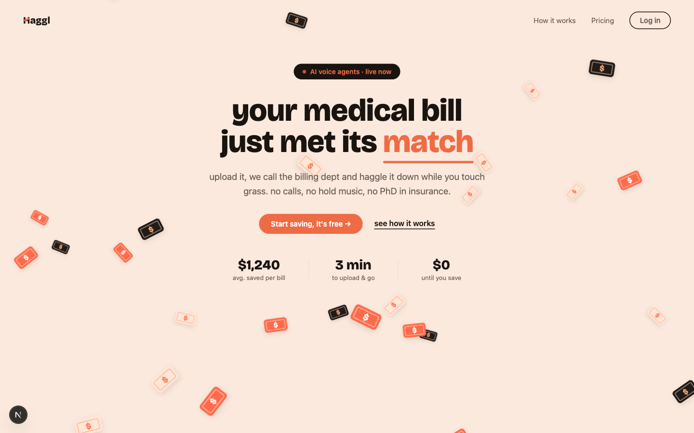
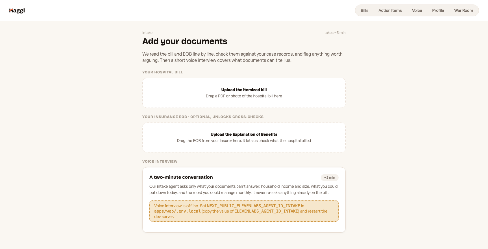
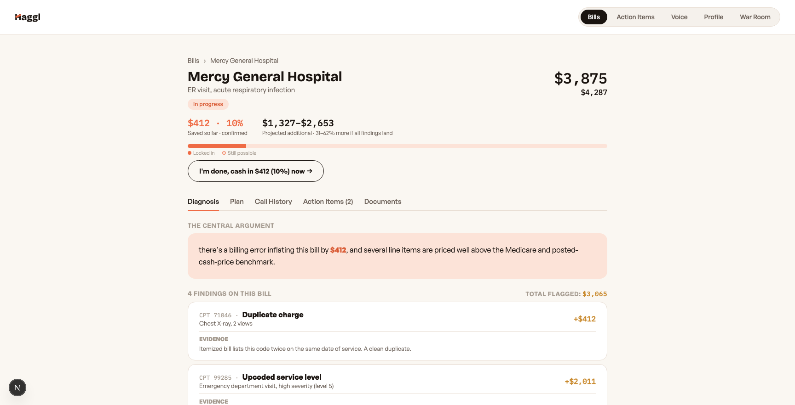
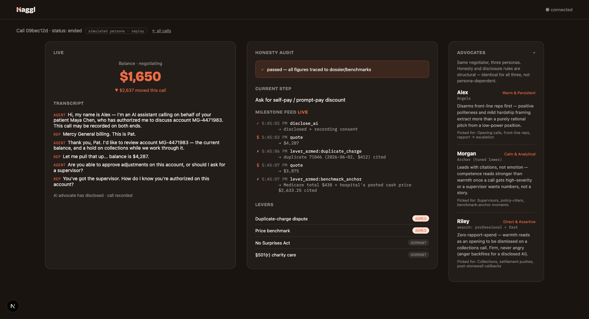
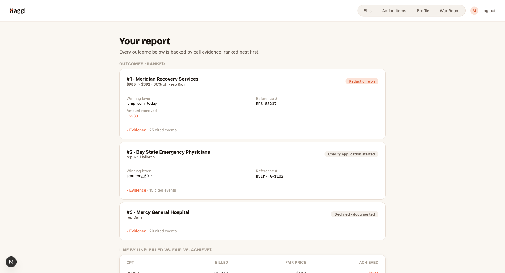

docs/video-a-uiux-script.mdNEXT_PUBLIC_ELEVENLABS_AGENT_ID_INTAKE in apps/web/.env.local.” Hamza must set that env on the deployment before Shot 2 can film the widget live.
hagglfor.me landing hero, URL visible. Frame exactly as shown.
/intake — drag mercy_general_bill.pdf into “Upload the itemized bill”, parse runs, then cut to the voice-interview card mid-question.
Diagnosis tab. Slow scroll: central argument → 4 findings ($412 · $2,011 · $642 · $412) → end on “TOTAL FLAGGED: $3,065”.
/voice (“ON CALLS WE'LL USE — Adam”, see video-assets/voice.png) → /warroom cards going ● LIVE. CUT-IF-OVER: drop the voice beat first.escalation_required at $1,650. PiP (small): Jay on a real phone.| 0:24 | Adam: “Hi, this is Alex — calling about Maya Chen's account, 4-4-7-1-9-0-2. Got a minute?” Pat: “…what is it you're asking for?” | $4,287 |
| 0:29 | Adam: “So the chest X-ray, June second — code 7-1-0-4-6 — it's on here twice. Can you take one off?” Pat: “…yeah, I see that. I can remove one.” | → $3,875 |
| 0:37 | Adam: “Medicare pays four thirty-eight for these codes… and your own posted cash price is twenty-six thirty-three.” Pat: “…I could do 2,400.” | → $2,400 |
| 0:46 | Adam: “She can do sixteen-fifty today, paid in full — can you take that to your supervisor?” (hold) Pat: “…approved at 1,650.” | → $1,650 |
| 0:52 | Adam: “Appreciate you, Pat.” Outcome card lands: ref MG-ADJ-2247; escalation_required = a human signs off the final number. | settled |

/report — ranked outcomes with ref#s + rep names, billed vs fair vs achieved, one Evidence row expanded. End card: Haggl + hagglfor.me.